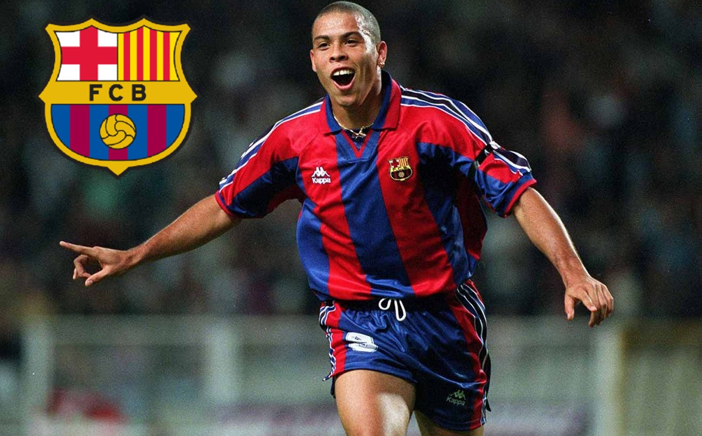
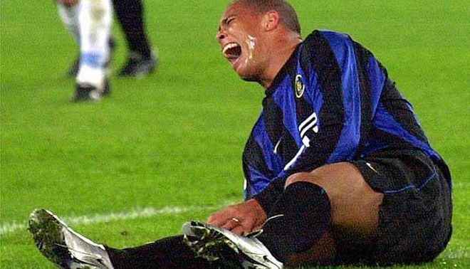
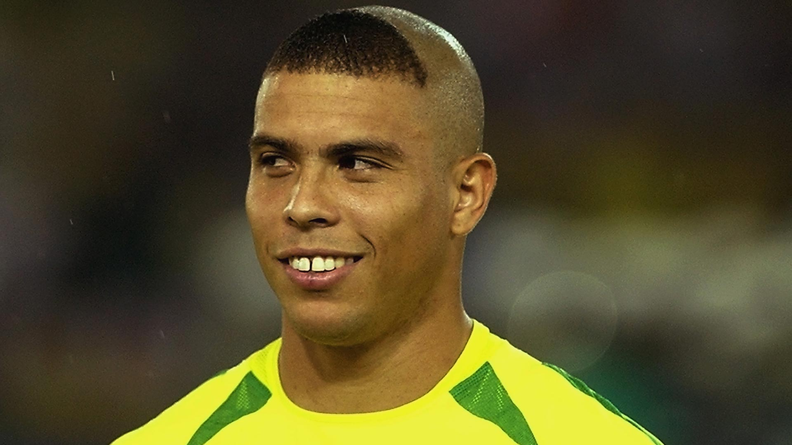
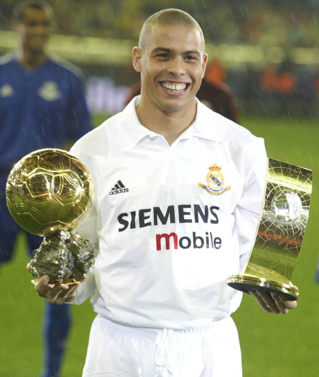

Ronaldo Nazário
"O Fenômeno"
I. El Surgimiento del Fenómeno (1993-1997)

Ronaldo irrumpió en el fútbol como un cometa. Tras asombrar en el Cruzeiro y el PSV, llegó al FC Barcelona en 1996 para firmar la que muchos consideran la mejor temporada individual de la historia. Con solo 20 años, era una mezcla imposible de potencia técnica, velocidad y regate.
Su gol al Compostela, arrancando desde el medio campo y sorteando rivales que intentaban derribarlo sin éxito, definió su apodo: El Fenómeno. En 1997, se convirtió en el jugador más joven de la historia en ganar el Balón de Oro, un récord que aún ostenta.
II. Gloria y Tragedia en el Inter (1998-2001)

En el Inter de Milán, Ronaldo alcanzó su madurez física, pero también conoció el lado amargo del deporte. Tras perder la final del Mundial 98 bajo circunstancias extrañas, sufrió dos roturas de tendón rotuliano que amenazaron con retirar al mejor jugador del mundo con apenas 23 años.
Fueron casi tres años de cirugías y rehabilitación. El mundo del fútbol lloraba la pérdida de su estrella, creyendo que nunca volvería a correr. Sin embargo, su resiliencia mental fue tan fuerte como sus piernas, preparando el terreno para el regreso más grande de todos los tiempos.
III. Redención en Yokohama (2002)

Contra todo pronóstico médico, Ronaldo llegó al Mundial de Corea-Japón 2002. Con un peinado peculiar para desviar la atención de sus lesiones, el "9" de Brasil firmó una de las mayores gestas deportivas: anotó 8 goles en el torneo, incluyendo dos en la final contra Alemania.
Ese campeonato fue su mensaje al mundo: el Rey había vuelto. No solo ganó su segunda Copa del Mundo (la primera en la que fue protagonista absoluto), sino que recuperó su trono ganando su segundo Balón de Oro ese mismo año.
IV. El Galáctico y el Adiós (2003-2011)

Fichó por el Real Madrid en 2002, integrando el equipo de "Los Galácticos" junto a Zidane, Figo y Beckham. A pesar de haber perdido su velocidad explosiva inicial, su inteligencia y definición lo mantuvieron como el mejor delantero del planeta, ganándose la ovación incluso de Old Trafford tras un hat-trick memorable.
Se retiró en 2011 en el Corinthians de su país natal. Su legado no se mide solo en goles, sino en haber inspirado a toda una generación de delanteros. Como dijo Zlatan Ibrahimović: "Ronaldo no era fútbol, Ronaldo era la magia personificada".